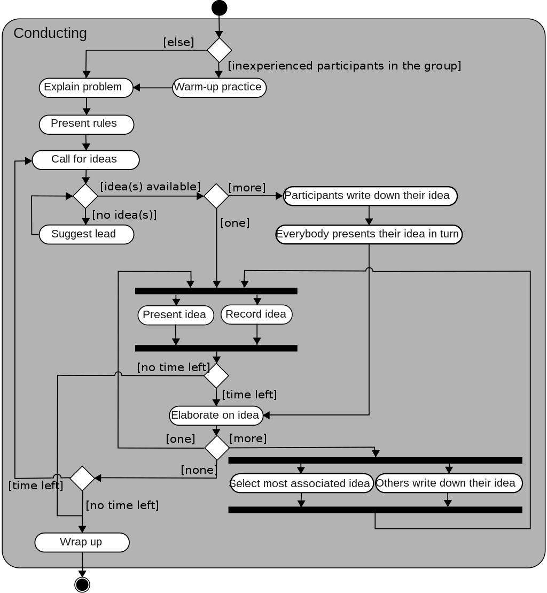

50.003 - Software Development Process¶
Learning Outcomes¶
By the end of this unit, you should be able to
- Articulate the different types of Software development process.
- Apply different types of software development process based on the project constraints and criteria.
- Name different types UML models.
- Identify the right UML models to be applied based on the software development phases.
What is Software Development¶
In modern days, software development is a process of solving existing (business, organizational, personal) problems by applying software engineering techniques and process to develop a software solution.
The main objective is to identify the cause of the pain points, gaps or inefficacy in process, then to design and (re-)develop a solution that operates around a set of software tools so as to address the pain points, bridge the gaps and fix the inefficacy.
Besides the functional needs, there exists non-functional needs to be satisfied. For instance, the end product must be easy to modify, update and maintain without major system overhaul, the end product must be user friendly, with a flat learning curve, and the end product must be highly secured and robust.
What is Software Development Process¶
Software Development Process (AKA Software Development Life Cycle) is an approach to organize the different stages/steps required to develop a software based solution to address the user needs.
After decades of software development, software engineers estalished a common consensus that most of the software development should include the following phases.
- Requirement Analysis
- Design
- Development
- Testing
- Deployment
Requirement Analysis¶
It is sometimes divided into requirement gathering and analysis. For this module, we keep it simple by comining these two phases.
In this phase, the system analysts or designers (and sometimes the software developers) research and study the existing problems (and the user needs) and determine what the software system can do to help. At the end of this phase, a set of system requirements is documented and agreed by both the system analysts and the project stack holders.
Design¶
In this phase, the system analysts or designers work closely with the software developers sketch out the overall structure, features, processes, user-interaction and information flows in the software system to be developed. The goal is to
- establish a common design among the design and development teams.
- check for feasibility of the potential solution alternatives.
- divde the system to be developed into parts so that they could be tackled in parallel or in different phases.
- plan out the required resource and effort to develop the system parts.
- prioritize and fix an order of development.
Development¶
In this phase, the developers implement the software system parts according to the design.
Testing¶
In this phase, sometimes interwined with the development phase, the software developers perform testing to verify that the developed software system parts are functioning according to the system requirements.
Deployment¶
In this phase, the tested software system is setup and installed in the target environment. The new operation processes related to the new system is setup and communicated to the end users.
Types of Software Development Processes¶
Based on how the project development is organized and divided by mixing the above-mentioned phases, there are a few commonly adopted models.
Waterfall model¶
In this model, we simply break down the project by the above-mentioned phases and follow the order of execution as follows
flowchart TB;
analysis["Requirement Analysis"] --> Design --> Development --> Testing --> DeploymentAlthough there are "back-flow" activities some times, for example, when during the design phase, the team discover a new issue which requires the project stack holder's clarification, the related activities in "Requirement Analysis" phase will be re-conducted. Similarly, during development and testing phases, when new constraints are encountered, the design has to be revisited and adjusted. These "back-flow" activities should remain as ad-hoc requests. In general, a project executed in waterfall model should not roll back to the earlier phases.
One major advantage of the Waterfall model is predictability. By breaking down the project in this manner, we only need to execute each phase once. We often believe (sometimes try to deceive ourselves) that we could prescribe a precise schedule for the system development.
However in reality, this level of predictability does not exist. It is hard to provide an accurate prediction on how many man-day does a software development project require, even though the project comes with a fixed set of requirements.
This is one of the main reasons why Waterfall model has been avoided by many projects. The break down by analysis-design-develop-test-deployment in one-shot gives us a fallacy, which tries to define "progress" as "moving from phase to phase". However, we are not sure the progress has been made until some code is written and tested against the requirements.
Iterative model¶
In an iterative model, unlike Waterfall model, a project is divided into multiple iterative cycles. Each cycle consists of a mini round of ananlysis-design-develop-test sequence. In each cycle, a subset of system features is scoped, design and develop. Each cycle must be time-boxed. Any slip of schedule could result in postponing some feature to the next iteration. At the begining of each iteration, the team ( maybe with the users) discuss what to be built in this iteration. At the end of the iteration, the team review (maybe with the users) the features have been delivered in this iteration and make some adjustment to address the new issues found in the upcoming iteration.
flowchart TB;
subgraph iteration one
analysis1["Requirement Analysis I1"] --> design1["Design I1"] --> development1["Development I1"]--> testing1["Testing I1"] --> release1["Release I1"]
end
subgraph iteration two
analysis2["Requirement Analysis I2"] --> design2["Design I2"] --> development2["Development I2"]--> testing2["Testing I2"] --> release2["Release I2"]
end
subgraph iteration three
analysis3["Requirement Analysis I3"] --> dotdotdot["..."]
end
release1 --> analysis2
release2 --> analysis3An advantage of the Iterative model over Waterfall model is progress. At the end of each iteration, the team and the users both see progress as features are delievered. Another advantage is adaptability. The project development can adapt to the changes of requirements and external factors.
Agile "model"¶
In the recent decade, the Agile methods gained popularity. However there exists no Agile model. What was defined and presented is a manisfesto with 12 principles.
There are many instances of Agile methods exist. For instance,
- Extreme Programming
- Scrum
- ...
Let's take Extreme Programming for example. In this Agile method, the team of people is assumed to have equal of similar skill levels. They must be co-located together to establish effective communication. The project is divided into smaller releases in weekly, bi-weekly or monthly cycles. Pair programming is encouraged which reduces the chance of being interupted and reduce the need of code review and excessive documentation. Each feature is implemented using the simpliest solution as possible. Automated testin and continuous integration must be put in-place.
In many Agile methods, one common assumption is that there exist frequent changes to the project requirements. Thus the smaller release cycle, the active engagement of the users help to prevent useless features being developed.
Note that the low documentation Agile methods is a by-product of having active user engagement, small co-located team and highly automated software development processes. Low documentation does not mean no documentation.
UML Models¶
UML is a short-form for Unified Modelling Language. Though it is a language, it is considered a graphical tool. It consists a set of (mostly) graph based tools that allows us to build models for analysis and design. Most of these tools are used for building software systems, whilst some even go beyond to be applied in other engineering domains.
 Image source: https://en.wikipedia.org/wiki/Unified_Modeling_Language
Image source: https://en.wikipedia.org/wiki/Unified_Modeling_Language
Based on functionalities, UML models can be classified into two major categories, Behaviour Diagrams and Structure diagrams
Structure Diagrams¶
Structure diagrams define or describe the structure of a target system, which could be a program, a software system, or even a physical product.
-
A Class Diagram describes the structure of a software system by modelling each sub components as an instance of a class. Following the idea of OOP, instances of a class share the same internal structures, i.e. a set of properties and a set of methods. We will go into details of class diagram in the week 2 lessons.
-
A Composite Structure Diagram is similar to a class diagram but focusing on the details with the class/component internals.

Image source (https://www.visual-paradigm.com/guide/uml-unified-modeling-language/what-is-composite-structure-diagram/)
-
A Package Diagram describes the layers of a (software) systems.
-
Unlike the class diagram captures the static relation among various components in a system, an object diagram describe a the running objects/compoents in the system in a particular instance.
-
A deployment diagram captures the physical running system processes. It can be used to model the overall architecture of a softare system.
 Image source (https://en.wikipedia.org/wiki/Deployment_diagram)
Image source (https://en.wikipedia.org/wiki/Deployment_diagram)
Behavior Diagrams¶
Behavior Diagrams define or describe the behavior of a target system.
-
If a class in a class diagram has specific order or sequence of changes of properties, we use a state machine diagram to augment the class diagram.
-
A use case diagram describes how users might interact with the target system. It is often augemented with a set of use cases (or use case texts) to capture a sceniaro during the user-system interactions. We will dive into the details of use case and use case diagram in the next lesson.
-
A sequence diagram shows the internal interactions between various sub-components within the target system to support a system feature or a system process. We will study sequence diagram in the 2nd week of this module.
-
An activity diagram is a kind of flow chart. It is used to model the actions or flows of data in a system. It is often used in describing a business process.
 Image source (https://en.wikipedia.org/wiki/Activity_diagram)
Fitting UML models into SDLC¶
Requirement Analysis¶
The common tool used in this phase is the use case diagram, which is more user and feature oriented. The goal is to capture the system requirement in a less ambiguous way so that a common understanding between the users and the project team can be established. The use case diagrams and documents can be also served as the starting points for conducting system and end-to-end testing during the later phases of the software development process.
Note that in some rare occasion class diagram and sequence diagrams could be used to explain to the project stack holders how the system is being developed.
Another point to take note is that the focus for requirement analysis is to establish the common understanding of the system requirements. Use case is one of the tools but not the only tool. Sometimes we use non-UML models if it conveys the right messages, e.g. screen flow diagram, user story board etc.
Design¶
In this phase, the commonly used UML models are class diagram, deployment diagrams and sequence diagrams.
Development and Test¶
During coding phase, the developers implement the designated parts based on the use case documents, the sequence diagram and class diagram.
Note that the use of class diagram does not dictate the choice of programming languages and frameworks. Though class diagrams are presented in an OOP style, they often describe the design in terms of how different components are related/interfaced with each other. The actual implementation can be done in non OOP programming language and framework.
Sequence diagrams specifies how the methods and API invocation take place given a particular use case scenario. They serve as a base reference of how to develop unit tests and integration tests.
Summary¶
In summary we have covered software development processes and types. We discussed what UML models could used in different phases of software development life cycle.